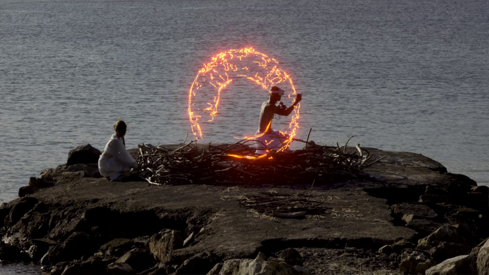
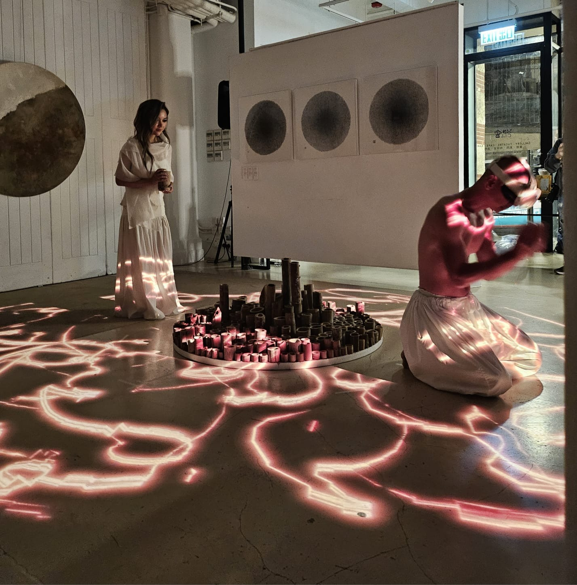

「ARtrio」
(Formerly 「X-ARt」)
Man, Nature, Technology, Art
About X-ARt
Using augmented reality technologies, we metaphorically reveal the ‘fields of force’ and ‘flows of materials’ of Nature, to arouse a greater appreciation of Nature and its invisible forces that affect every aspect of our lives.
Our work is a blend of site-specific installations, performance art, and technological experimentation, always aiming to bridge the gap between the digital and the natural world.




Performances & Experimentations
- 2025.10.11 Yim Tin Tsai Performing Arts Festival, Yim Tin Tsai, HK
- 2025.05.28 Tsung Lun Shoe Company, Kowloon City, HK Demo
- 2025.03.24 Art Fringe, Fringe Club, Central, HK
- 2025.01.11 Sai Kung Hoi Arts Festival, Yim Tin Tsai, HK (2 performances)
- 2025.01.10 Fringe Festival, Fringe Club, Central, HK
- 2024.11.17 Sai Kung Hoi Arts Festival, Yim Tin Tsai, HK (3 performances)
- 2024.11.08 Sai Kung Hoi Arts Festival, Yim Tin Tsai, HK
- 2024.08.01 The Altitude, Gaia Hotel Bandung, Yogjakarta, Indonesia
- 2024.07.29 Borobodur, Panambaran, Yogjakarta, Indonesia
- 2024.07.27 Yim Tin Tsai Old Pier, HK
- 2024.05 Tew Falls, Hamilton, Ontario, Canada
- 2024.05 Nordlingen Woods, Markham, Ontario, Canada
- 2024.04.25 Sharp Island beach, HK
- 2024.02.10 Shaw Auditorium, HKUST, HK
- 2023.12.02 Heath, Tsim Sha Tsui, HK
Engagement
- 2024.12.08 Sai Kung Hoi Arts Festival, Yim Tin Tsai, HK (3 workshops)
Technical Team
- CHAN Ho Ching Carson
- Kirill SHATILOV
- WU Chun Ming Jimmy
- WU Zhen
- YONG Vi Jun Sean
- ZHUO Yuchao